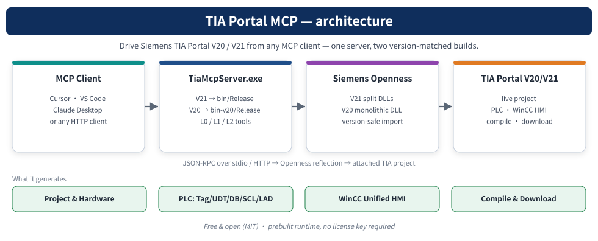

上游派生 · V17本地集成
静态文档页面，不运行TIA、不连接PLC，也不提供下载或RUN控制。

V17构建0错误/3警告；六项离线HMI XML检查通过。stdio元数据发现65工具含3项本地扩展，但没有调用工程工具。
PLC原始金样本缺失，明确blocked而非伪造通过。没有真实TIA导入、仿真/物理设备下载、RUN、在线读值或WinCC验收。
打开源码与环境准备 · 上游 / MIT 原作者